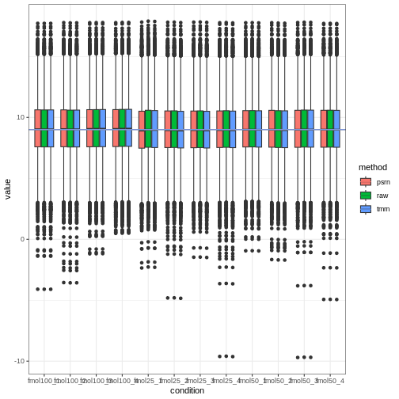

Multiple Imputation and limma
Philip Berg
mult-imp.RmdFirst we load the package:
library(mavis)Datasets included in mavis
mavis comes with two of the published data sets,
yeast and ups, published in @berg2019evaluation (details can be found there;
please cite accordingly if you use these data in your work). Both
datasets are quantified with Progenesis. The ups data sets
is a global proteomics dataset without reducing peptides to proteins
with either Chlamydomonas reinhardtii (chlamy) peptides with
the same concentration in all samples. The ups is spiked-in
with three different concentrations of the Universal Proteomics Standard
Set 1 (UPS1) with four replicates each. The yeast data was
generated by extracting reversibly oxidized cysteines in
Saccharomyces cerevisiae or chlamy where the yeast extraction
was added in two different concentrations and chlamy in the same in all
samples. The yeast data is therefore a lot noisier than the
ups data. The yeast data looks as follows:
yeast
#> # A tibble: 2,235 × 7
#> identifier ng50_1 ng50_2 ng50_3 ng100_1 ng100_2 ng100_3
#> <chr> <dbl> <dbl> <dbl> <dbl> <dbl> <dbl>
#> 1 Cre01.g000450.t1.2|PACid:30788617|--321 77.4 78.1 76.4 11.3 5.99 NA
#> 2 Cre01.g000800.t1.2|PACid:30788536|--66 247. 255. 245. 225. 227. 231.
#> 3 Cre01.g002050.t1.1|PACid:30789101|--408 60.1 43.2 69.9 133. 113. 118.
#> 4 Cre01.g002300.t1.2|PACid:30788660|--168 90.8 74.9 55.1 96.8 90.1 76.7
#> 5 Cre01.g002300.t1.2|PACid:30788660|--40 932. 1096. 925. 1179. 1377. 1335.
#> 6 Cre01.g002300.t1.2|PACid:30788660|--69 537. 469. 369. 1106. 1127. 1099.
#> 7 Cre01.g004350.t1.2|PACid:30788641|--148 90.6 110. 70.6 119. 94.5 81.0
#> 8 Cre01.g004500.t1.2|PACid:30789545|--270 3.56 NA NA 99.0 111. 81.0
#> 9 Cre01.g004500.t1.2|PACid:30789545|--355 4376. 4311. 3952. 3901. 3643. 3697.
#> 10 Cre01.g004500.t1.2|PACid:30789545|--402 271. 123. 32.0 787. 799. 785.
#> # ℹ 2,225 more rowswhere the identifier is a column that uniquely maps each
cysteine to the observations in ng50_* or
ng100_* (which are the relative concentrations the yeast
cysteines were spiked in with) and the integer at the end indicates
different repeated experiments. The ups data looks as follows:
ups
#> # A tibble: 10,599 × 13
#> identifier fmol25_1 fmol25_2 fmol25_3 fmol25_4 fmol50_1 fmol50_2 fmol50_3 fmol50_4 fmol100_1 fmol100_2 fmol100_3 fmol100_4
#> <chr> <dbl> <dbl> <dbl> <dbl> <dbl> <dbl> <dbl> <dbl> <dbl> <dbl> <dbl> <dbl>
#> 1 Cre01.g000350.t1.1|PACid:30788481|--AVLLFATGSGISPLR 695. 674. 689. 694. 741. 739. 733. 796. 644. 675. 715. 735.
#> 2 Cre01.g000350.t1.1|PACid:30788481|--GFALDRLPASTTR 736. 636. 657. 608. 793. 783. 694. 734. 654. 642. 619. 613.
#> 3 Cre01.g000350.t1.1|PACid:30788481|--VVIDVGAPLAAGYTVPGQFVQVK 681. 727. 638. 647. 732. 726. 654. 661. 628. 694. 607. 684.
#> 4 Cre01.g000350.t1.1|PACid:30788481|--VVSVYSESK 491. 448. 463. 444. 372. 408. 408. 475. 413. 389. 476. 433.
#> 5 Cre01.g000900.t1.2|PACid:30788866|--ALGPATATLPTYGVGHGLGSLIQLLICAR 7.90 1.19 NA 26.9 NA 33.4 NA NA NA NA NA NA
#> 6 Cre01.g000900.t1.2|PACid:30788866|--LAAGAVESTGGALGR 106. 82.6 102. 96.6 84.3 97.3 93.1 90.0 91.2 91.2 86.6 108.
#> 7 Cre01.g000900.t1.2|PACid:30788866|--TPSAVAHFLGEAFVGAAPQMAYR 39.3 64.5 15.3 60.2 31.0 29.2 38.5 57.6 35.5 51.0 41.1 47.7
#> 8 Cre01.g001100.t1.2|PACid:30788546|--AAANQDPAELEAANPVASWLSR 694. 664. 530. 453. 617. 566. 518. 275. 581. 513. 488. 449.
#> 9 Cre01.g001100.t1.2|PACid:30788546|--APAANGGAAATPAPAAAAPAPRPAAPAR 525. 601. 673. 618. 631. 509. 669. 593. 530. 626. 635. 680.
#> 10 Cre01.g001100.t1.2|PACid:30788546|--APSGVLGACLR 743. 671. 680. 636. 664. 667. 687. 649. 679. 624. 762. 689.
#> # ℹ 10,589 more rowswhere the identifier is as in the yeast dataset but
uniquely maps peptides and fmol25_*, fmol50_*,
and fmol100_* are different relative concentrations of UPS1
with different technical replicates.
Data normalization
The first step is to normalize the data. The function
plot_norm_box generates boxplots of the raw data after
log\(_{2}\) transformation and two
different normalization methods. If we first look at the yeast data,
then the plot can be generated as follows:
plot_norm_box(yeast, 'identifier')
The data is already has a stable median, but we still do normalization.
This can either be done tmm as introduced in @robinson2010scaling or with psrn
as introduced in @anders2010differential.
To exemplify we use psrn and tmm as
follows:
Both psrn and tmm first normalizes the data
and then log\(_{2}\) transforms it
unless the flag log=FALSE is used. For the ups
data we do the same thing:
plot_norm_box(ups, 'identifier') we
might notice that the x-axis labels are overlapping. Since
plot_norm_box returns a ggplot object, one can
easily rotate the label by using the + syntax and
ggplot2::theme as follows:
plot_norm_box(ups, 'identifier') +
ggplot2::theme(
axis.text.x = ggplot2::element_text(angle = 15)
) in this way, any theme of the
plot can easily be modified using
in this way, any theme of the
plot can easily be modified using ggplot2 syntax. One could
also use the plot_target feature of
plot_norm_box to select only a subset of samples to
plot:
plot_norm_box(ups, 'identifier', plot_target = contains('fmol25')) which supports the
which supports the
tidyselect package operations for selecting columns.
Likewise, tmm and psrn have the flag
target which can be used to select only a subset of columns
to normalize. If left unspecified they will use all numerical columns in
the normalization! They also contain the flag load_info
which then makes the functions return a list with the normalized data,
the estimated loading concentrations, and the estimated normalization
factors used. We then normalize the ups the same way as the
yeast:
Gamma regression for imputation and mean-variance normalization
From here on out, several functions in mavis will depend
on a design matrix. A design matrix can be created as follows:
yeast_design <- model.matrix(
# Yeast has two conditions (1:2) and three replicates (each = 3)
~0+factor(rep(1:2, each = 3))
)
ups_design <- model.matrix(
# ups has three conditions (1:3) and four replicates (each = 4)
~0+factor(rep(1:3, each = 4))
)
# The design matrices has to have the same name as the conditions:
colnames(yeast_design) <- paste0('ng', c(50, 100))
colnames(ups_design) <- paste0('fmol', c(25, 50, 100))Next, we will calculate the M-V trend and determine the integration windows for the trend partitioning.
yeast_grid <- yeast_psrn %>%
calculate_mean_sd_trends(yeast_design) %>%
grid_search(yeast_design, n_h1 = 20, n_h2 = 20, workers = round(parallel::detectCores()/2))
yeast_grid
#> # A tibble: 400 × 5
#> h1 h2 formula s clustered_data
#> <dbl> <dbl> <list> <dbl> <list>
#> 1 0.00782 0.213 <formula> 426. <spc_tbl_ [2,235 × 11]>
#> 2 0.110 0.213 <formula> 397. <spc_tbl_ [2,235 × 11]>
#> 3 0.00782 0.315 <formula> 374. <spc_tbl_ [2,235 × 11]>
#> 4 0.00782 0.418 <formula> 365. <spc_tbl_ [2,235 × 11]>
#> 5 0.213 0.315 <formula> 341. <spc_tbl_ [2,235 × 11]>
#> 6 0.00782 0.00782 <formula> 332. <spc_tbl_ [2,235 × 11]>
#> 7 0.00782 0.110 <formula> 331. <spc_tbl_ [2,235 × 11]>
#> 8 0.110 0.00782 <formula> 330. <spc_tbl_ [2,235 × 11]>
#> 9 0.110 0.520 <formula> 328. <spc_tbl_ [2,235 × 11]>
#> 10 0.110 0.418 <formula> 322. <spc_tbl_ [2,235 × 11]>
#> # ℹ 390 more rows
# Select the best dataset
yeast_psrn <- yeast_grid$clustered_data[[1]]The gamma regression and mean-variance scatter plots can then be
produced by plot_gamma_regression.
plot_gamma_regression plots the trends used for precision
weights (later fed to limma’s lmFit similar to
voom) on the left and gamma regression after trend
partitioning on right. For yeast:
plot_gamma_regression(yeast_psrn, yeast_design, formula = sd ~ mean + c) The two
individual plots can be generated similarly by calling
plot_gamma or plot_gamma_partition. If one
wants to inspect the estimated models that can be done similarly with
fit_gamma_regression.
Data imputation and significance calling
Multiple imputation
To perform multiple imputations and then run limma on each imputation
can efficiently be performed by
multiple_imputation_and_limma.
multiple_imputation_and_limma fits the needed gamma
regressions and has a backend to multidplyr for parallel
processing. This can drastically increase the speed when running 1000 or
more imputations. Here is an example of the yeast data
running 1000 imputations and using 5 parallel workers. First, we need to
generate a contrast matrix that indicates what comparisons to
perform.
yeast_contrast <- limma::makeContrasts(
contrasts = 'ng100-ng50',
levels = yeast_design
)This performs the test if the mean of the cysteines in the
ng100 conditions is different from the means in the
ng50 condition. Further, it also means that the LFC will be
calculated as ng100 - ng50. We are now ready to run the
imputation.
yeast_multi_imputation_results <- multiple_imputation_and_limma(
data = yeast_psrn,
design = yeast_design,
contrast_matrix = yeast_contrast,
imputations = 20,
workers = 1,
id_col = 'identifier',
plot_trend = FALSE, # we have already looked at the mean-variance plots
# otherwise, putting this flag to TRUE would generate those plots
formula_imputation = sd_p ~ mean # Use the partitioned data for imputation
# c is the name of the column containing the partitions
)
#> Estimating Imputation Paramters
#> Previous error: Inf > Current error: 5.444341
#> Iteration time:
#> 5.971423 secs
#>
#> Previous error: 5.444341 > Current error: 0.1079685
#> Iteration time:
#> 6.06436 secs
#>
#> Previous error: 0.1079685 > Current error: 0.04645285
#> Iteration time:
#> 6.040693 secs
#>
#> Previous error: 0.04645285 > Current error: 0.02983121
#> Iteration time:
#> 6.012253 secs
#>
#> Previous error: 0.02983121 > Current error: 0.02238201
#> Iteration time:
#> 6.014209 secs
#>
#> Previous error: 0.02238201 > Current error: 0.01713396
#> Iteration time:
#> 5.985145 secs
#>
#> Previous error: 0.01713396 > Current error: 0.01268942
#> Iteration time:
#> 5.984343 secs
#>
#> Previous error: 0.01268942 > Current error: 0.009054756
#> Iteration time:
#> 5.980093 secs
#>
#> Previous error: 0.009054756 > Current error: 0.007237367
#> Iteration time:
#> 6.003131 secs
#>
#> Previous error: 0.007237367 > Current error: 0.007167067
#> Iteration time:
#> 5.988187 secs
#>
#> Previous error: 0.007167067 < Current error: 0.00921588 Breaking
#> Iteration time:
#> 5.993181 secsyeast_multi_imputation_results will now be a
tibble with each row containing one imputation and one
decision from limma.
yeast_multi_imputation_results
#> # A tibble: 20 × 3
#> imputation imputed_data limma_results
#> <int> <list> <list>
#> 1 1 <spc_tbl_ [2,235 × 11]> <tibble [2,235 × 5]>
#> 2 2 <spc_tbl_ [2,235 × 11]> <tibble [2,235 × 5]>
#> 3 3 <spc_tbl_ [2,235 × 11]> <tibble [2,235 × 5]>
#> 4 4 <spc_tbl_ [2,235 × 11]> <tibble [2,235 × 5]>
#> 5 5 <spc_tbl_ [2,235 × 11]> <tibble [2,235 × 5]>
#> 6 6 <spc_tbl_ [2,235 × 11]> <tibble [2,235 × 5]>
#> 7 7 <spc_tbl_ [2,235 × 11]> <tibble [2,235 × 5]>
#> 8 8 <spc_tbl_ [2,235 × 11]> <tibble [2,235 × 5]>
#> 9 9 <spc_tbl_ [2,235 × 11]> <tibble [2,235 × 5]>
#> 10 10 <spc_tbl_ [2,235 × 11]> <tibble [2,235 × 5]>
#> 11 11 <spc_tbl_ [2,235 × 11]> <tibble [2,235 × 5]>
#> 12 12 <spc_tbl_ [2,235 × 11]> <tibble [2,235 × 5]>
#> 13 13 <spc_tbl_ [2,235 × 11]> <tibble [2,235 × 5]>
#> 14 14 <spc_tbl_ [2,235 × 11]> <tibble [2,235 × 5]>
#> 15 15 <spc_tbl_ [2,235 × 11]> <tibble [2,235 × 5]>
#> 16 16 <spc_tbl_ [2,235 × 11]> <tibble [2,235 × 5]>
#> 17 17 <spc_tbl_ [2,235 × 11]> <tibble [2,235 × 5]>
#> 18 18 <spc_tbl_ [2,235 × 11]> <tibble [2,235 × 5]>
#> 19 19 <spc_tbl_ [2,235 × 11]> <tibble [2,235 × 5]>
#> 20 20 <spc_tbl_ [2,235 × 11]> <tibble [2,235 × 5]>If one wants to access one particular imputation or decision that can
be done with $ and [[ as follows.
yeast_multi_imputation_results$imputed_data[[5]]
#> # A tibble: 2,235 × 11
#> identifier ng50_1 ng50_2 ng50_3 ng100_1 ng100_2 ng100_3 mean sd c sd_p
#> <chr> <dbl> <dbl> <dbl> <dbl> <dbl> <dbl> <dbl> <dbl> <chr> <dbl>
#> 1 Cre01.g000450.t1.2|PACid:30788617|--321 6.29 6.29 6.36 3.42 2.53 3.47 4.98 1.86 c 0.364
#> 2 Cre01.g000800.t1.2|PACid:30788536|--66 7.97 8.00 8.05 7.74 7.78 7.78 7.88 0.134 a 0.0328
#> 3 Cre01.g002050.t1.1|PACid:30789101|--408 5.93 5.44 6.24 6.97 6.77 6.82 6.36 0.601 b 0.295
#> 4 Cre01.g002300.t1.2|PACid:30788660|--168 6.53 6.23 5.89 6.52 6.45 6.19 6.30 0.246 a 0.254
#> 5 Cre01.g002300.t1.2|PACid:30788660|--40 9.89 10.1 9.96 10.1 10.4 10.3 10.1 0.192 a 0.121
#> 6 Cre01.g002300.t1.2|PACid:30788660|--69 9.09 8.88 8.64 10.0 10.1 10.0 9.46 0.665 b 0.162
#> 7 Cre01.g004350.t1.2|PACid:30788641|--148 6.52 6.78 6.25 6.82 6.51 6.27 6.53 0.241 a 0.269
#> 8 Cre01.g004500.t1.2|PACid:30789545|--270 1.85 0.697 1.72 6.55 6.74 6.27 5.35 2.34 c 0.234
#> 9 Cre01.g004500.t1.2|PACid:30789545|--355 12.1 12.1 12.1 11.9 11.8 11.8 11.9 0.155 a 0.0346
#> 10 Cre01.g004500.t1.2|PACid:30789545|--402 8.10 6.95 5.11 9.54 9.59 9.55 8.14 1.83 c 1.07
#> # ℹ 2,225 more rows
yeast_multi_imputation_results$limma_results[[5]]
#> # A tibble: 2,235 × 5
#> identifier lfc mean p_val comparison
#> <chr> <dbl> <dbl> <dbl> <chr>
#> 1 Cre06.g263450.t1.2|PACid:30779125|--303 3.53 12.1 7.22e-10 ng100 vs ng50
#> 2 sp|P00549|KPYK1_YEAST--418 3.16 13.4 1.46e- 9 ng100 vs ng50
#> 3 Cre02.g114600.t1.2|PACid:30784840|--172 2.16 12.4 3.96e- 9 ng100 vs ng50
#> 4 gi|41179066|ref|NP_958423.1|--48-51-54-58 2.38 12.6 4.17e- 9 ng100 vs ng50
#> 5 Cre09.g386650.t1.2|PACid:30781165|--257 2.07 12.1 8.15e- 9 ng100 vs ng50
#> 6 Cre10.g420750.t1.2|PACid:30790763|--50-53 4.16 9.47 3.19e- 9 ng100 vs ng50
#> 7 Cre02.g120150.t1.2|PACid:30786468|--128 1.80 12.6 1.18e- 8 ng100 vs ng50
#> 8 Cre03.g182551.t1.2|PACid:30787991|--130 1.07 14.8 1.19e- 8 ng100 vs ng50
#> 9 sp|P05759|RS27A_YEAST--121-126 1.76 11.8 1.80e- 8 ng100 vs ng50
#> 10 sp|P00358|G3P2_YEAST--150 1.06 12.1 2.39e- 8 ng100 vs ng50
#> # ℹ 2,225 more rowswhich shows the results of the fifth imputation. Next to perform
p-value correction and binomial testing for the imputations we use
extract_results.
yeast_reduced_results <- extract_results(
data = yeast_psrn,
results = yeast_multi_imputation_results,
id_col = 'identifier',
alpha = 0.05,
abs_lfc = 1,
pcor = 'fdr',
null_hyp = 0.5
)Single imputation
To perform a single imputation one can use the
single_imputation function. First we fit the gamma
regression to estimate the variance for the imputation model then we
perform the imputation:
yeast_psrn <- yeast_psrn %>%
# Add mean-variance trends
calculate_mean_sd_trends(yeast_design)
yeast_one_imputation <- single_imputation(yeast_psrn, yeast_design, sd_p ~ mean)
#> Estimating Imputation Paramters
#> Previous error: Inf > Current error: 5.458818
#> Iteration time:
#> 5.891357 secs
#>
#> Previous error: 5.458818 > Current error: 0.1134419
#> Iteration time:
#> 5.978635 secs
#>
#> Previous error: 0.1134419 > Current error: 0.04493073
#> Iteration time:
#> 5.966029 secs
#>
#> Previous error: 0.04493073 > Current error: 0.030459
#> Iteration time:
#> 5.963692 secs
#>
#> Previous error: 0.030459 > Current error: 0.02016536
#> Iteration time:
#> 5.958513 secs
#>
#> Previous error: 0.02016536 > Current error: 0.01278651
#> Iteration time:
#> 5.96677 secs
#>
#> Previous error: 0.01278651 > Current error: 0.008127496
#> Iteration time:
#> 5.963759 secs
#>
#> Previous error: 0.008127496 > Current error: 0.005392598
#> Iteration time:
#> 5.985986 secs
#>
#> Previous error: 0.005392598 < Current error: 0.006126771 Breaking
#> Iteration time:
#> 5.952502 secsNext, we fit the gamma regression for estimating the precision
weights with fit_gamma_weights.
yeast_gam_reg <- yeast_one_imputation %>%
# Update mean-variance post imputation
calculate_mean_sd_trends(yeast_design) %>%
# Fit the regression
fit_gamma_regression(sd ~ mean)We now run a single instance of limma with
run_limma.
yeast_one_imputation_results <- run_limma(
yeast_one_imputation,
yeast_design,
yeast_contrast,
yeast_gam_reg,
'identifier'
)One might want to perform some p-value correction on this data. This
can be one with R’s function p.adjust.
Further, since run_limma returns the data in tidy format
and if there are several comparisons, dplyr’s
group_by and mutate can perform p-value
correction per comparison as follows:
Plotting the results
Multiple imputation
The final decision for the analysis can be plotted with
plot_ma. plot_ma returns a ggplot
object so it can easily be ascetically adjusted using
ggplot syntax.
plot_ma(yeast_reduced_results) +
# Move legend to below the plot
ggplot2::theme(
legend.position = 'bottom'
)
Single imputation
For the single imputation, we need to include a few more inputs to
plot_ma.
plot_ma(
hits = yeast_one_imputation_results,
data = yeast_one_imputation,
id_col = 'identifier',
alpha = .05,
abs_lfc = 0.5
) + # Set color-blind friendly colors
ggplot2::scale_color_manual(
values = c('grey45', 'darkblue', 'darkred')
)